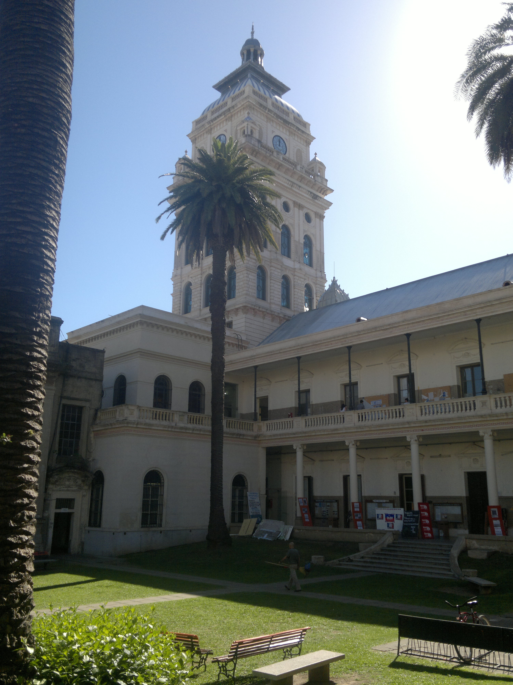
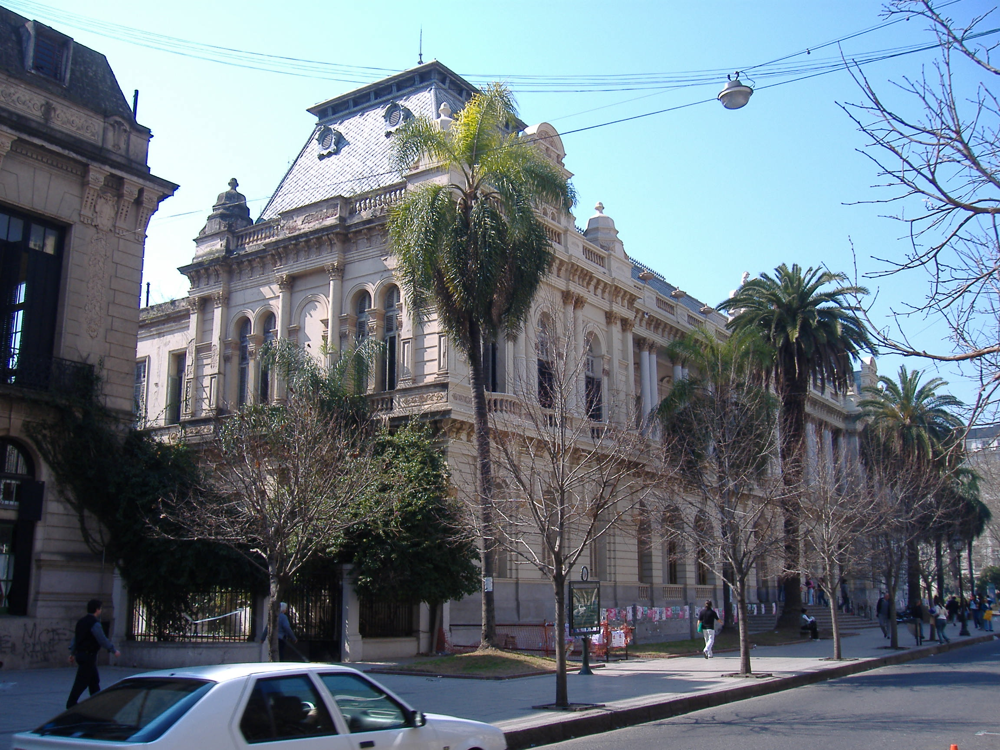
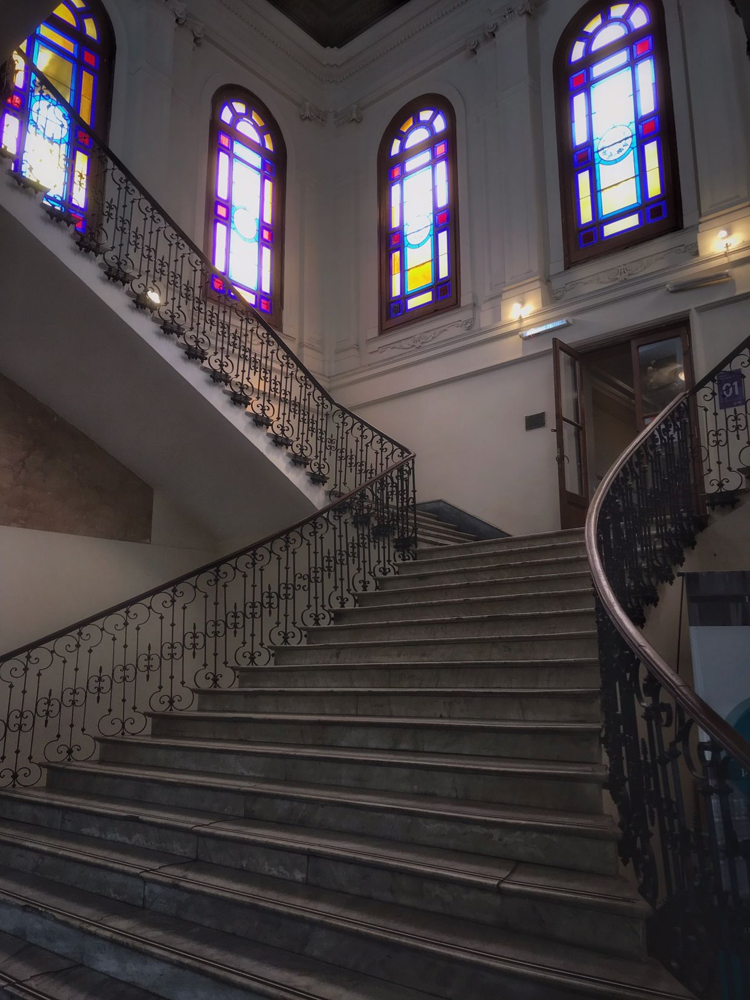

El 27 de junio de 1959, la Asamblea Universitaria de la Universidad Nacional del Litoral aprobó la creación de la Escuela de Derecho dependiente de la Facultad de Ciencias Económicas, Comerciales y Políticas, con asiento en Rosario.
Edificio Proyectado y construido por el arq. Inglés Herbert Boyd Walker en 1892.
Una frase, citada en el folleto que se publicara en 1962 impulsando la conversión de la Escuela de Derecho en Facultad y resume nuestra historia y los ideales de nuestros fundadores muy brevemente: «Por que tú eres libre para alcanzar tus sueños».
Arquitectura de la facultad
La Universidad Nacional de Rosario se creó por ley 17.987 del 29 de noviembre de 1968. La fecha de constitución oficial es la del 16 de diciembre del mismo año.
